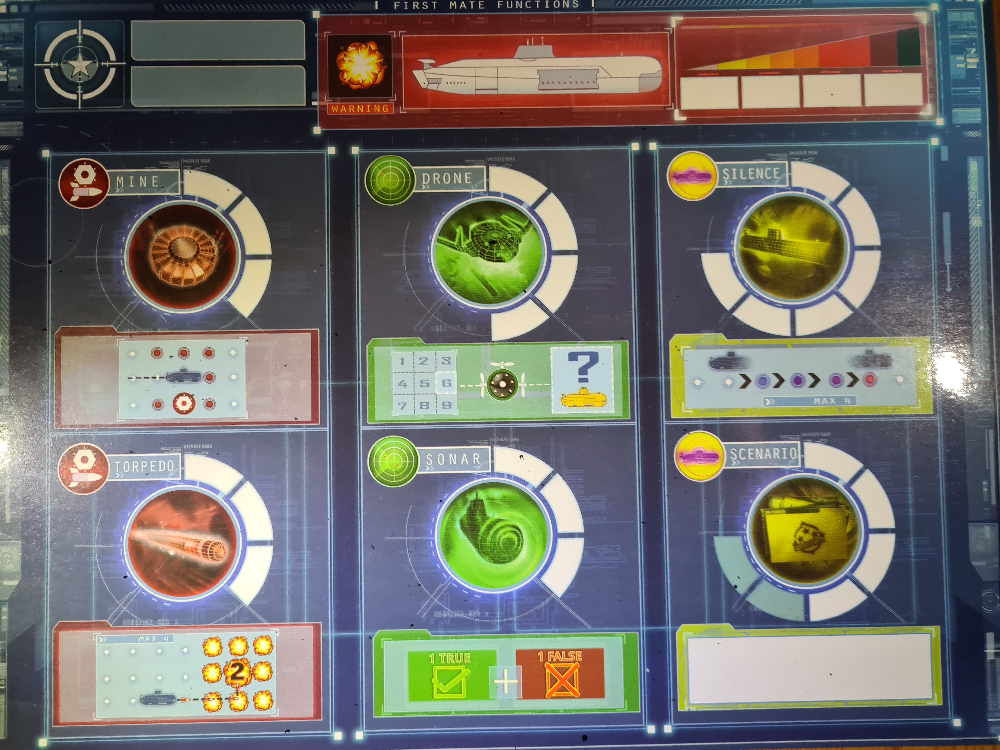
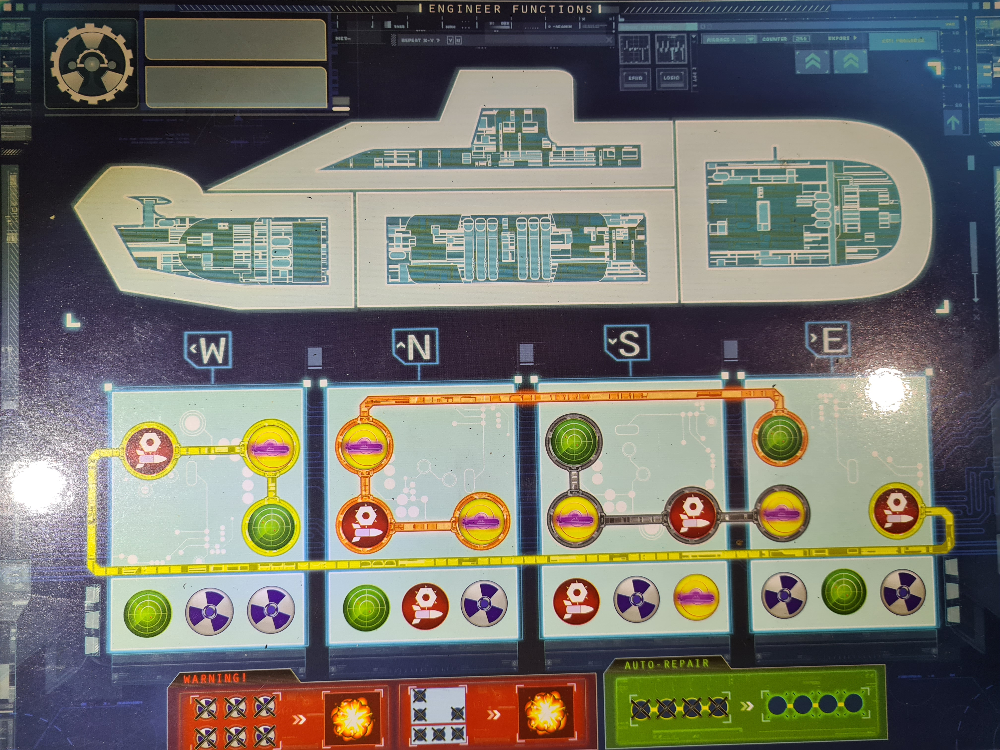

| Időpont | Esemény | Részvevők |
| 2023-10-30 | H3 feladatok kiosztása | Mindenki |
| 2023-11-04 | H3 megbeszélés | Mindenki |
| 2023-11-08 | Megírt dokumentumok áttekintése | Mindenki |
2.4. Korlátozások, feltételezések, függőségek:
7.Captain Sonar Szoftver Támogatottsága és Karbantartása
9. On-line dokumentáció és Help rendszer
Ez a csapatunk SRS dokumentuma, melyben az alábbbi tényezőket fogjuk kifejteni:
Ennek a fejezetnek a célja a készülő alkalmazás szempontjából fontos általános körülmények összefoglalása.
-a termék környezete
-legfontosabb funkciók
-a felhasználók jellemzői
-korlátozások
-feltételezések és függőségek
-a követelmények csoportosításának szempontjai
Ebben az alpontban lesznek összefoglalva a a rendszerrel szemben támasztott funkcionális követelményeket.
A leírás történhet természetes nyelven és/vagy user case diagramok használatával.
Case diagramok használata esetén a use case modell alapvetően use case csomagok sorozata.
Csoportosítás ilyenkor a csomagok segítségével történik, és egy-egy alpont egy csomagra vonatkozik.
Itt kell összefoglalni azokat a nem funkcionális követelményeket, amelyek a rendszer használhatóságát befolyásolják.
-Mennyi betanulási időre lesz majd szüksége a rendszer hatékony használatához egy kezdő és egy gyakorlott felhasználónak.
-Mennyi idő alatt tud egy adott tevékenységet végrehajtani egy átlagos felhasználó a jelenlegi módszerrel, meglévő más rendszerek, illetve a fejlesztendő rendszer segítségével.
-Melyek azok a rendszer tulajdonságok, amelyek segíthetik a kezdő felhasználót a gyors betanulásban?
-Milyen egyéb lehetőségek állnak rendelkezésre (vagy kérhetők a fejlesztőktől ingyen vagy külön díjazás fejében) a betanulás elősegítésére (tréningek, dokumentációk, könyvek, demonstrációs prototípus stb.)
-Mennyire hasonló vagy eltérő a felhasználói felület, annak használati módja a felhasználók által már korábban is használt alkalmazásokkal összehasonlítva?
-Ha a leendő alkalmazással párhuzamosan más alkalmazásokat is fognak használni a felhasználók a munkájuk során, összhangban vannak-e ezek programok a használat (elsősorban a felhasználói felület szempontjából)?
A rendszerrel szemben támasztott megbízhatósági követelmények.
-Rendelkezésre állás (pl. %-ban): teljes használhatóság, karbantartási idő, korlátozott használhatóság.
-MTBF: (Mean Time Between Failures): hibák között eltelt átlagos idő.
-MTTR: (Man Time To Repair): egy hiba utáni javítás átlagos ideje.
-A rendszer eredményeinek pontossága, felbontása (ha értelmezhető).
Itt kell leírni a rendszertől elvárt teljesítmény mutatókat.
-válaszidők (legalább a leggyakrabban használt funkciók esetén)
-áteresztőképesség (például tranzakció/mp)
-kapacitás (például a kezelt adatbázis max. mérete, feldolgozandó tranzakciók száma, egyidejűleg kiszolgálandó felhasználók száma stb.)
-a korlátozott használhatóság idején elvárható / teljesítendő mutatók
-erőforrás igények (processzor sebesség, memória igény, diszk kapacitás, sávszélesség stb.)
A rendszer üzembe helyezése után szükséges karbantartási feladatok megkönnyítésére szolgáló követelmények.
-a használandó kódolási szabványok, elnevezési konvenciók
-csak a karbantartóknak, illetve üzemeltetőknek szükséges funkciók
-a működés során keletkező naplók (a későbbi hibakeresés vagy finomhangolás elősegítésére)
-a karbantartók munkáját segítő segédalkalmazások (például a naplók kiértékelésére)
Itt kell felsorolni egy-egy alpontban minden olyan korlátozást, amely a tervezési, esetleg az implementációs munkát befolyásolja.
-a kívánatos architektúrára vonatkozó előírások (például milyen részekből [„tier”] kell felépíteni az alkalmazást)
-milyen programozási nyelv(ek)et kell használni
-milyen fejlesztőeszközt kell használni
-milyen újra felhasználható elemek építhetők be az alkalmazásba (komponens- és/vagy osztálykönyvtárak, kész kódok stb.)
-milyen fejlesztési módszertant, hogyan kell használni
Kellenek-e ilyenek, ha igen, a vonatkozó információk.
Egy-egy alpontban kell felsorolni az alkalmazásba építendő vásárolt vagy szabad felhasználású elemeket.
Vásárlás esetén a részletezni kell a beszerzés körülményeit, a költségeket, a betartandó liceszelési és egyéb szabályokat.
Szabad felhasználású elem esetén is fontos a forrás pontos megjelölése, a felhasználás szabályai, az alkalmazásra ebből adódó esetleges következmények, kötelezettségek.
Ebben a fejezetben kell specifikálni a rendszer valamennyi külső kapcsolatát, az ezt biztosító interfészeket.
-Ebben az alpontban kell leírni a felhasználói interfészre vonatkozó követelményeket.
-használandó szabvány vagy kvázi-szabvány, stílus
-a különböző felhasználói csoportok (munkakör, gyakorlottság stb. szerint) elvárásai
-a leglényegesebb user interface elemek tervei
-Ha vannak a rendszerben speciális kezelendő hardware elemek.
-Ha a rendszernek más rendszerekkel az üzembe helyezés után, vagy belátható időn belül majd a kapcsolatot kell tartania más rendszerekkel, itt kell megadni a kapcsolat kiépítéséhez szükséges részletességű információkat.
-Ha a rendszernek valamilyen kommunikációs csatorna vagy csatornák segítségével kell kapcsolatot tartania a felhasználókkal vagy más rendszerekkel. (Például internetes, mobiltelefonos kliens stb.)
A fejlesztés során vagy az alkalmazás készítése és üzemeltetése, használata során betartandó előírások (technikai vagy szakterületi szabványok, törvények stb.)
-Valamilyen szintű előírás miatt. (Például törvényi előírás stb.)
-A fejlesztők vagy a felhasználók által valamilyen okból önként vállalt előírások.
Főleg hosszabb dokumentumok esetén ide kerülhet minden olyan információ, ami a dokumentum áttekinthetőségét segíti (pl. tárgymutató, irodalomjegyzék, egyéb források megjelölése), illetve a fejlesztés egyéb, kapcsolódó dokumentumaira való hivatkozás.
Számítógépes játék révén a szofter a játékiparban helyezkedik el, ráadásul egy olyan helyet kitöltve, ahol igen kevés ilyen digitalizált játék a konkurencia.
A program jelenleg számítógépes, JVM-t is támogató környezetben
működik. A Java Virtual Machine (JVM) egy olyan virtuális gép,
amely a Java programokat futtatja. Ez a szoftverkomponens
kulcsszerepet játszik a Java platform működésében, számos előnyt
kínálva a Java nyelvű fejlesztőknek.
Ez a virtuális gép egy olyan környezetet biztosít, amelyben a Java
forráskódot bytecode-ra fordítja, majd ezt a bytecode-ot futtatja
le. Ez a bytecode platformfüggetlen, tehát a JVM által támogatott
különböző rendszereken ugyanaz a Java program futtatható.
A JVM végzi el a bytecode interpretálását vagy just-in-time (JIT)
fordítását, amely optimalizálja és gyorsítja a Java programok
futását. Emellett a JVM felelős a memóriakezelésért, garbage
collectionért, illetve egyéb futásidejű tevékenységekért.
Az, hogy a Java platformot JVM-en keresztül valósítják meg,
lehetővé teszi a Java programoknak a platformfüggetlenséget és a
könnyű hordozhatóságot. Egy alkalmas JVM telepítésével a Java
alkalmazások futtathatók a különböző operációs rendszereken
anélkül, hogy a forráskódot újra kellene fordítani.
Összességében a JVM a Java programok életét kezeli a forráskód
írásától a futtatásig, biztosítva a hatékonyságot, hordozhatóságot
és platformfüggetlenséget a Java fejlesztők számára.
Ezekre a gépekre Steam, valamint Epic Games segítségével lehet a szoftvert telepíteni és elindítani.
fiók regisztrálása: egy e-mail címet megadva egy
megerősítő kód segítségével tudunk megadni felhasználónevet és
jelszót, helytelen/már foglalt felhasználónév esetén a program
jelez.
bejelentkezés meglévő fiókba: e-mail
cím/felhasználónév és jelszó kombinációval
fiók helyreállítása elfelejtett jelszó/felhasználónév
esetén: e-mail címre küldött kód segítségével, ahol egy
új jelszót tud beállítani a felhasználó.
beállítások: megjelenéssel és hanggal kapcsolatos beállítások
játék, többféle játékmóddal
flottatervező: a játék során megszerzett alkatrészeket
itt lehet a saját hajókra "rászerelni", így képességekkel,
specialitásokkal és felszerelésekkel rendelkeznek, amelyek
befolyásolják a játékmenetet. Ezek egyaránt jelenthetnek
előnyt vagy hátrányt is a játékban, hogy senki ne szerezhessen
túl nagy fölényt.
ranglista
különleges event-ek
játékstatisztikák
lobby: lehetőséget ad a szövetségi rendszerben lévő játékosok meghívására, hogy barátságos játék esetén összecsapjanak vagy közösen küzdjenek meg egy ellenséges szövetségi rendszerrel szemben.
szövetségi rendszer: a játékosok közösségeket alkothatnak és ezáltal még jobban elmélyülhetnek a játékban
chat
A termék elsősorban olyan játékosoknak szól, akik szeretik a stratégiai és kooperatív játékokat, valamint akik képesek stresszhelyzetben is minél jobb döntéseket hozni. Mivel a játékban többféle pozícióban kell helytállni, ezért tökéletes választás baráti társaságok körében, mivel együttműködve kell dolgozni a győzelem érdekében, ráadásul mivel többféle szerepet kell ellátni, ezért mindenki meg fogja találni a saját pozícióját attól függően, hogy az adott személy éppen vezéralkat, vagy inkább a háttérben szeretné megnehezíteni az ellenség dolgát. Abból adódóan, hogy megfontolt döntéseket kell hozni a játék során, valamint mivel egyes körök igencsak elhúzódhatnak időben, ezért szükséges egy bizonyos érettség ahhoz, hogy megfelelő élményt nyújtson a termék.
A Captain Sonar, mint termék, elsősorban azoknak a játékosoknak
szól, akik élvezik a stratégiai és kooperatív játékokat. A játék
nem csak a taktikai gondolkodást, hanem a csapatmunka és hatékony
kommunikáció fontosságát is kiemeli. Azok számára, akik
stresszhelyzetekben is képesek a legjobb döntéseket hozni, a
Captain Sonar egy tökéletes társasjáték.
Kiváló választás baráti társaságok körében, mivel együttműködve
kell dolgozni a győzelem érdekében, ráadásul amiatt, mert a
játékban többféle pozícióban kell helytállni, mindenki meg fogja
találni a saját pozícióját attól függően, hogy az adott személy
éppen vezéralkat, vagy inkább a háttérben szeretné megnehezíteni
az ellenség dolgát.
Az egyéni készségek és preferenciák sokszínűségét hangsúlyozva a
Captain Sonar kiválóan alkalmazkodik mindenki játékstílusához.
Lehetőséget ad arra, hogy mindenki megtalálja a saját helyét, és a
csapat együttes erőfeszítése eredményeként érjék el a győzelmet.
A játék nem csupán kihívásokat kínál, hanem a megfontolt döntések
fontosságát is hangsúlyozza. Az egyes körök elhúzódhatnak időben,
így az érettség és a türelem nélkülözhetetlen ahhoz, hogy teljes
mértékben élvezetessé váljon a játékélmény. A Captain Sonar tehát
nem csupán egy játék, hanem egy kifinomult, izgalmas kaland, amely
mély stratégiai és társas kapcsolatokat épít ki a játékosok
között.
Korlátokat tekintve a programnak nincsenek nagy megszorításai, mivel nincsenek olyan szükségletei, mint például egy mai AAA játéknak.
Gépigénye viszonylag alacsony, abból eredendően, hogy nem
rendelkezik sem olyan grafikai elemekkel, amik leterhelnék a
GPU-t, sem olyan számításokat nem kell végeznie a programnak, ami
a CPU-t túlzottan igénybe venné, így nem kell erős hardware hozzá,
szinte minden ma használt személyi számítógépen elfut, feltéve,
hogy az támogatja a JVM-t és a JRE-et, mivel ezek nélkül nem tud
futni az alkalmazás. A JVM (Java Virtual Environment) egy olyan
környezetet biztosít, amelyben képes az elkészített futtatható
Java byte kód futni. Ennek hiányában viszont nem indítható el a
játék.
A programot Java-ban fejlesztjük, több előnye, köztük a
platformfüggetlensége miatt is, viszont ehhez így szükséges a JRE,
ami nélkül nem fog futni az alkalmazás.
Az internetelérés opcionális, ugyanis létezik a játékban offline multiplayer mód, ahol a jelen levő csapattársainkkal mesterséges intelligencia ellen tudunk úgy játszani, mintha másokkal játszanánk. Ennek ellenére ajánlott az internetes csatlakozás, hogy elérhessünk frissítéseket, láthassuk a ranglistákat, el tudjuk menteni játékállásainkat online, de főleg azért, mert jobb érzés élő embereket legyőzni, mint egy nem létező virtuális ellenfelet.
Operációs rendszer: Windows 10 vagy újabb; Linux; MacOS
Processzor: Intel Core i5 vagy AMD Ryzen 5
Memória: 4 GB RAM
Videokártya: NVIDIA GeForce GTX 750 Ti vagy AMD Radeon RX 560
Tárhely: 5 GB szabad hely
A bejelentkezés követően a felhasználónak lehetősége van használni a program funkcióit, ezen belül is a fiók kezelése funkciót. Itt a játékos megváltoztathatja a felhasználó nevét, valamint jelszavát. Továbbá kijelenkezhet a fiókjából, vagy akár törölheti is azt. A kijelentkezést leszámítva minden a fiókot érintő változáshoz szükséges a jelszó megadása.
A felhasználó jelszavát a szerveroldalon titkosítjuk hogy egy esetleges hacker támadás esetén ne lehessen könnyedén felhasználni az adatokat.
A főmenüben a játkékos láthatja a flottáját valamint a korábban lejátszott játékainak az eredményeit. A főmenü feladata hogy innen könnyedén és egyszerűen elérhetőek legyen további funkciók
Az első funkció amely elérhető az a fiók kezelése funkció. Innen a felhaszáló megváltoztathatja jelszavát,felhasználó nevét,valamint törölheti a fiókját. Ezen módosításokhoz meg kell adnia a jelszavát biztonsági okokból. Új jelszó megadása esetén kötelező kétszer megadni az új jelszavát annak érdekében hogy biztosan a kívánt jelszót adja meg a felhasználó. Amennyiben azok nem egyeznek meg újra meg kell adni a két új jelszavát valamint az eddig használtat. Tovább lehetősége van a felhasználónak kijelentkeznie.
A "Flotta tervezés" gombra kattintva a felhasználónak lehetősége van a járműveit fejlszeteni átalakítani. Három jármű elérhető amely a tengeralattjáró,romboló,valamint a repülőgép hotdozó anyahajó. A Flotta tervező további funkcióit későbbi alfejezetben mutatjuk be részletesen.
A "Játék lobby" gombra kattintva a játékosnak lehetősége van létrehozni egy lobby-t vagy csatlakozni egybe. Itt fontos, hogy két tipusú játékmódott megkülönböztetünk. Az egyik esetben az egyes járműveknek teljes személyzettel kell hogy rendelkezzenek, még a másik esetben nincs mekötés a játékos számot illetően(enm lehett több mint az összes jármű személyzet száma). További információk a "Csapatok elosztása" pontban olvasható. A lobbyban meghívhatjuk a szövetségi rendszerünkben lévő játékosokat, és barátságos játék esetén összecsaphatnak vagy közösen küzdhetnek meg egy ellenséges szövetségi renszerrel szemben. Továbbbá lehetőség van zárt lobby-t létrehozni ahova nem csatlakozhat akárki csak a meghívott játékosok.
A "Szövetségi rendszer" menüpontra kattintva van lehetőség csatlakozni szövetségekhez, létrehozni szövetséget, vagy különböző diplomácia kapcsolatokat ápolni más szövetségi rendszerekkel.

Szövetségi rendszer célja hogy a játékosok közösségeket alkossanak és ezálta még jobban elmélyülhessenek a játékban. Amennyiben egy játékos része a szövetségi rendszernek ez látható lesz a játékos profilján, továbbá láthatja a többi játékos harcainak teljes folyamát(nem csak az eredményeit) így a játékosnak egy olyan élményt nyújtunk mitha egy szövetségi rendszeren belül hozzáférne a hadi titkokhoz. Továbbá itt a játékosokna lehetősége van a kereskedésre(cserekereskedelem) amelyel egymást kisegítve tudják tovább fejleszteni a járműveiket vagy akár bővíteni a flottájukat.
Továbbá a későbiekben amennyiben elér egy bizonyos játékos számot a játék olyan funcióval lehetne kibővíteni a játékot ahol egy hatalmas pályán a legnagyobb szövetségi rendszerek összecsaphatnak egymással egy akár heteken át tartó küzdelemben ahol végül csak egy marad. Ebben az event-ben tovább fokozza az izgalmakat az esetleges árulások.
A szövetségeken belül létre lehet hozni "osztagokat", amelynek célja hogy a közeli barátok szorosabb szövetségbe tudjanak kerülni. Egy osztag maximális létszáma 10 fő. Továbbá egy játékos csak akkor kereskedhet osztagon kívűl ha azon belül senki nem tart igény az adott alkatrészre vagy nem tudnak megfelelő ajánlatott tenni. Hogy ne lehssen ezzel viszzaélni ha 24 órán belül nem sikerült megegyezni senkível akkor feloldódik a korlátozás. Az osztag tagjai le is mondhatnak erről a jogukról.
Egy "osztag" közös megegyezés alalpján áttehető egy másik szövetségi rendszerbe
Mind a szövetségi rendszerek esetében mind az osztagok esetében van lehetőség történe írásra. Ezzel lényegében történelme lehet az egyes osztagoknak és szövetséi rendszerekenk, elgendákat alkothatnak amelyel tovább színesíthetik a játékot, amely alternatív történelemmel fog rendelkezni.
Amennyiben a játékos már része egy szövetségi rendszernek akkor nem engedélyezet a csatlakozás, először ki kell lépni abból a szövetségi rendszerbő amiben benne van.
A játékos kérelme nem éri el a szervert akkor a játékosnak újra kell küldenie egy kérelmet
Lehetősgé szerint bizonyos időköznként szeretnénk különleges event-el kiegészíteni a játékot amelyek legfeljebb 2 hétig lennének elérhetőek. Az egyik event olyan lenne hogy mítikus tengeri szörnyeket fedezhetnek fel a játékosok(amelyekről ma sokat lehet olvasni) és ezzel a játékban is tényelg legendásak lennének azopn játékosok számára akik nem találkoztak vele. Ezek ritkák lennének és midenkit megtámadnának oldaltól függetlenül. A játékosoknak csakkor lenne lehtőségük legyőzni ha összefognak viszont a csatának továbbra is akkor van vége ha az ellenséges csapat megsemmisül ezért érdemes a munka oroszlán részét az ellenségre hagyni. Ez a taktika viszont könnyen ahhoz vezethet hogy mindenki veszít.
A kraken a víz alól támadna és ha eléri azt a mezőt ahol a jármű tartózkodik azt lerántaj a mélybe és kettő kört követően megsemmisíti azonnal. A járműveket nem lehet kiszabadítani. Egy körben kettő mezőt tud mozogni, viszont 10 élete van erős páncélja miatt, valamint csak a telitalálatok sebzik. Továbbá képes az őt körülvevő és a saját mezőját tintával elfedni így elfedve a pontos poziícióját.
Ha a lobby vezére nem az "Attack of the Kraken" játékmódott választja ki akkor nem lesz jelen a csatában a Kraken
Egy szerver leállás esetán a játék addigi állapota el mentődik amely később vissza tölthető.
Flotta tervezőben amely a saját kikötőnk, három jármű tipus elérhető és az egyes járművekből három-három egyéni tervezésű lehet a birtokunkban. Minden jármű egyedi alkatrészeket igényel amelyek nem mindegyike használható fel más tipusú járművekben.
Az egyes járművek hat darab egységből épülnek össze. Váz,páncél,propeller,motor,felderítő rendszer, valamint a tüzérségi rendszer
A váz azt befolyásolja hogy nem telitalálat esetén mennyi sebzést szenved a jármű, a páncél a telitalálat esetén határozza meg hogy mennyi sebzést kap a jármű. A közepes szinten 1-el csökkenti a rá vonatkozó sebzést, az acélos szinten pedig 2-vel csökkenti.
A motor lehet benzin,diesel,vagy nukleáris. A benzine az alap. A diesel a gyorsabb és a nukleáris meghajtás pedig a leggyorsabb.
A propeller lehet "el turbo" ,átlagos vagy lassú. Alapból minden járművön lassú propeller található, az átlagos egyel növeli a sebességet , az "el turbo" pedig kettővel.
A felderítő rendszerben mindenki rendelkezik egy "Sonar" és egy "Drone"-al. A drón segítségével megnézhetjuk hogy egy adott szektorban jelen van-e az ellenség. A sonar segítségével pedig kikényszeríthenünk egy igaz és egy hamis állítást az ellenség pozíciójáról.
A fegyverzet minden járműnek egyedi, bár vannak átfedések az egyes járművek között. A torpedó alapvetően egyet sebez ha szomszédos és kettőt ha teli találat. A kettes szintű torpedó pedig már 5 egységnyi távolságot képes megtenni és telitalálat esetén képes 3-at sebezni. A 3. szintű torpedó pedig 6 egységnyi távolságra lőhető és 2-őt sebez a szomszádos mezőn, valamint hármat telitalálat esetén./p>
Az egyes egységeből ha mindegyikből lehetne használni a legfejletteb rendszert az rendkívűl erőssé tenné az adott járművet. Éppen ezért a jármű összeállítása során maximum 2 darab hármas szintű, valamint maximum 3 darabb 2-es szintű egységet lehet felhasználni. Ez rákényszeríti a játékosokat arra hogy különböző játékstílusokat is kipróbáljanak. Abban az esetben ha egy járműre felszerelünk egy különleges fegyverzetet a játékos csak 1 darab hármas szintű egységet használhat fel.
Rendelkezik részegységekkel
Az általa kiválasztott jármű rendelkezik a kiválasztott részegységek tulajdonságaival
A játékos nem az általa gondolt részegységet építi be így nem a kívánt tulajdonsákkal fog rendelkezni a járműve
A kérelem nem ér el a szerverhez ezért el kell kezdenie előröl a folyamatot
A chat rendszer már a lobby-ban létrejön egy külön ablakban és ott lehet kommunikálni. A lobby arra szolgál hogy a játékosok összegyűljenek és szinkronba kerülejene egy játékhoz. A chat ablakban két mód van az egyik az amikor mindenki látja amit a chatber ír a játékos, a másik esetben pedig csak a csapattársak látják. Amennyiben a felhasználó a chatbe az üzenete elé beírja hogy "/all" akkor az az üzenet mindenki számára látható lesz aki résztvesz a csatában.
Romboló feladatta hogy felderített tengeralattjárókra mérjen csapást valamint szigeteket foglaljon és hogy légvédelmet biztosítson. A romboló 3 egységet tud mozogni és a romboló alapvetően 2 "élettel" rendelkezik. Mivel könnyű elpusztítani ezért fontos kihasználnia azt az előnyét hogy gyors.
Két fegyverzettel rendelkezik alapból, amely a légvédelmi ágyú és az akna. A légvédelimi ágyúval le lehet lőni egy az aznonos szektorban lévő légi járművet, továbbá a szintén azonos szektorban lévő felszínen lévő járművekbe tud egyet sebezni teli találat esetén. Az akna bármelyik szomszédos mezőre elhelyezhető(átlósan szomszédos mező esetén is) és bármikor detonáltatható, teli találat esetén egyet sebez, szomsédos mező esetén pedig felfedi hogy az ellenség benne volt egy szomsédos mezőjében. A romboló különleges fegyverzete a robbanó hordók. Ezeket úgy tudja kijátszani hogy egy körben 4 azonos irányú lépést tesz és minden egyes lépésnél kiválasztható hogy meilyen mélységbe merüljön a hordó. Amennyiben eltalálja a tengeralatjárót 2 sebzést okoz, amennyibben szomszédos mezőben van 1 sebzést okoz.
A romboló élete adott, viszont páncélzattal és vázzal lehet csökkenteni a kapott sebzés mértékét. Páncélból és vázból 3 szint van. Az "alap", a "kemény" és az "acélos" amely a legerősebb. Minden egyes szint 1-el csökkenti a kapott sebzést a rá vonatkozó esetben.
A Sonar, és a drón a felderítésben segítenek. A sonar segítségével le ellenőrizhetjük hogy egy szektorban tartózkodik-e az ellenfél, a drónnal pedig egy igaz és egy hamis állítást kell adnia az ellenfélnek a pozíciójáról. Itt is kettővel fejletteb rendszerek taálhetóak melyek 1-el csökkentik a felkészültségek számát használat előtt.
Az "előretörés" képesség során valamilyen irányban 6 egységet tud mozogni, minden lépés azonos irányban történik. Ezt a képességet a propeller befolyásolja amely a 2. szinten egyel növeli a ható távot még a harmadik szinten engedélyez egy irányváltoztatást az utolsó lépés során.
Amennyiben egy Romboló "karbantartást végez" a karban tartandó rendszerek megjavulnak, cserébe három körből kimarad, valamint nyílvános lesz egy kör erejéig hogy mely szektorban tartózkodik. Cserébe viszont újra elérhető a korábbi útvonala.
Repülőgéphordozó anyahajó feladatta hogy távolról felderítse az ellenséget és csapást mérjen rájuk. Az anyahajó a játékban mondhatni "support" szerepet tölt be, ahol felderít és sebzi távolról az ellenfeleket, viszont a szemtől szembeni csatát kerüli. A repülőgéphordozó anyahajó a négy égtáj irányában tud mozogni 1 egységet. A Repülőgéphordozó anyahajó alapvetően 7 "élettel" rendelkezik.
Repülőgéphordozó anyahajó repülőgéppel és rövid hatótávú torpedóval rendelkezik,különleges fegyvere a helikopter. A repülőgép segítségével minden felszínen lévő hajó pozícióját megtudja állapítani valamint 3 szektort tud ellenőrizni tengeralattjárók után. Továbbá a repülők képesek támadást végezni a felszínen lévő járművekkel szemben, amely repülőt ha nem lőnek le 2 sebzést okoz. A rövid ható távú torpedóit 2 távolságra tudja kilőnni és teli találat esetén 1-et sebez, célja inkább védelmi jellegű. Különleges fegyvere a helikopter amely használható egy szektor ellenörzésére valamint bárhova elszállíthat egy bombát és ledobhatja egy megválasztott mélységbe amely telitalálat estén azonnal megsemmísiti a tengeralatt járót, ellenkező esetben nem sebez egyáltalán. Továbbá a helikoterrel elfoglalható egy sziget abban az esetben ha nem lövik le. A repülőkből 5 darab a helikopterből pedig 2 darab elérhető egy csata során, amelyekből egyszerre csak egy használható.
A Repülőgéphordozó anyahajó adott, viszont páncélzattal és vázzal lehet csökkenteni a kapott sebzés mértékét. Páncélból és vázból 3 szint van. Az "alap", az "kemény" és az "acélos" amely a legerősebb. Minden egyes szint 1-el csökkenti a kapott sebzést a rá vonatkozó esetben.
A Sonar, és a drón a felderítésben segítenek. A sonar segítségével le ellenőrizhetjük hogy egy szektorban tartózkodik-e az ellenfél, a drónnal pedig egy igaz és egy hamis állítást kell adnia az ellenfélnek a pozíciójáról. Itt is kettővel fejletteb rendszerek találhetóak melyek 1-el csökkentik a felkészültségek számát használat előtt. Különleges Képessége amivel felszerelhet az egy olyan repülőgép amelyet egy szektorba kiküldve jelzi hogy ha oda belép egy ellenséges jármű.
Amennyiben semelyik repülője nincs használatban az "au revoir" képességével 1 irányba tud hármat lépni és a kezdeti pozíciójához képest a másik három irányba lő kis hatótávolságú torpedót. A képesség használatához szükséges a rövid ható távú torpedó készléte is
Amennyiben egy Repülőgéphordozó anyahajó "karbantartást végez" a karban tartandó rendszerek megjavulnak, cserébe három körből kimarad, valamint nyílvános lesz egy kör erejéig hogy mely szektorban tartózkodik. Cserébe viszont újra elérhető a korábbi útvonala.
Tenger alatt járó feladatta hogy felderítetlenül mozogjon és a mélyből mérjen csapást az ellenségre akkor amikor a leggjobban fáj nekik. A mélybe merülés opciónak köszönhetően amelyel 3000m mélyre tud elmerülni (3x1000) rendkívűl nehéz megállapítani a pozícióját. Viszont ha nem manőverezik megfelelően, az ellenséges csapa könnyedén lokalizálni tudja. A tengeralatt járó a négy égtáj irányában tud mozogni 2 egységet valamint a mélységét változtatni. A mélység megváltoztatása szintén publikus információ az viszont hogy merült vagy feljött az már nem. A tengerallatjáró alapvetően 4 "élettel" rendelkezik.
Két fegyverzettel rendelkezik alapból, amely a torpedó és az akna. A torpedó tellitalálat esetén kettőt szomszédos mező estén pedig egyet sebez, valamint 4 egységet mozoghat a torpedó bármilyen irányba minden egyes egység esetén(a saját útvonalát nem érintheti) valamint egyet változtathat a mélységén. Az akna bármelyik szomszédos mezőre elhelyezhető(átlósan szomszédos mező esetén is) és bármikor detonáltatható, teli találat esetén egyet sebez, szomsédos mező esetén pedig felfedi hogy az ellenség benne volt egy szomsédos mezőjében.A tengeralt járó esetén különleges fegyverzet a rakéta, amelyel szigetek bázisait tudja megsemmisíteni vagy a felszínen lévő járművekbe 3 sebzést okozni teli találat esetén, ellenkező esetben 0 a sebzése.
A tengeraltjáró élete adott, viszont páncélzattal és vázzal lehet csökkenteni a kapott sebzés mértékét. Páncélból és vázból 3 szint van. Az "alap", az "kemény" és az "acélos" amely a legerősebb. Minden egyes szint 1-el csökkenti a kapott sebzést a rá vonatkozó esetben.
A Sonar, és a drón a felderítésben segítenek. A sonar segítségével le ellenőrizhetjük hogy egy szektorban tartózkodik-e az ellenfél, a drónnal pedig egy igaz és egy hamis állítást kell adnia az ellenfélnek a pozíciójáról. Itt is kettővel fejletteb rendszerek taálhetóak melyek 1-el csökkentik a felkészültségek számát használat előtt.
"Chemin de la souris" azaz "egérút" során a tengeralattjáró úgy tud négyet mozogni egy irányba hogy nem publikus ilyenkor az irány amelybe elment. Ezt a képességet a propeller befolyásolja amely a 2. szinten egyel növeli a ható távot még a harmadik szinten engedélyez egy irányváltoztatást az utolsó lépés során.
Amennyiben egy tengeralat járó feljön a felszínre a karban tartandó rendszerek megjavulnak, cserébe három körből kimarad, valamint nyílvános lesz egy kör erejéig hogy mely szektorban tartózkodik. Cserébe viszont újra elérhető a korábbi útvonala.
Fontos hogy a csapatok eloszlásánál figyelembe vegyük a játék módot, amiben meghatározzuk hogy az egyes járművekben kötelező-e a maximumszemélyzet szám. Amennyiben kötelező a maximális személyzet szám, minden egyes pozíciót külön játékosnak kell betöltenie. Ellenkező esetben a játékosnak/játékosoknak előre elkell dönteniük hogy mely pozíciókat fogják betölteni. FOntos korlátozás hogy egy játékos csak egy jármű kezelésében vehet rész, hiszen a való életben sem lehetnek az emberek két helyen egyszerre, valamint az rontanná a játék élmény hosszú távon. Egy április elsejei játékmódban viszont ez a limitáció megszűnik így a játékosok játszhatnak úgy a játékkal hogy nem kell olyan komolyan venni, valamint mint egy kihívásnak sem utolsó
Minden járműben 4 szerepet kell betölteni. Ezek a kapitány,rádiós,elsőtiszt,mérnök.
A kapitány feledata hogy eldöntse a stratégiát és végrehajtsa azt. A kapitánynak jaték mechanikai szempontból csupán két lehetósége van befolyásolni a játékot. Először is a kapitány dönti el hogy melyik irányba menjen jármű. Ilyenkor a négy égtájat választhatja tehát észak,dél,kelet,nyugat. Továbbá az elérhető akciók közül ő dönti el hogy mozgás helyet használják-e valamelyiket és hogy melyiket. A kapitány kezében tehát olyan lehetőségek állnak amelyekel nagyban befolyásolhatják a csata menetét és a legénység sorsát. A jó kapitány csak akkor tud győzni ha öszhangban van a legénység többi tagjával és van egy tiszta vízió amelyen mindenki dolgozik és lehetőség szerint ha kell stratégia váltás esetén annak megfelelően reagálnak.
A rádiós feladata hogy az ellenség lépéseit ismerve felépítsen egy útvonalat és annak segítségével valamint az egyéb megzerzett információkkal lokalizálja az ellenséget és ezzel lépés előnyt adva a kapitány kezébe. Ezt ugy teszi meg hogy feljegyzi am egtett irányokat és a kirajzolódott útvonalat mozgatva a pályán következtet az ellenség pizíciójára. A rádiós feladata kritikus hiszen a kaptiány csak akkor fog tudni megfelelő stratégiát kidolgozni ha ismeri az ellenség pizícióját. Éppen ezért fontos hogy a kapitány megfelelő akciók végrehajtásával további információt nyújtson a rádiós számára, aki ha megfelően végzi a dolgát akkor betudja határolni az ellenséget. Egy kaptiány aki megfelelően manőverezik viszont megtudja nehezíteni a rádiós dolgát.
Az első tiszt feladata hogy minden mozást követően elossza az erőforrásait és előkésztse az egyes rendszereket amelyekket a kapitány akcióként kijátszhat. A rendszerek a következőek:Torpedó,akna,Sonar,Drón,Csendes manőver. Az egyes rendszerekről a 3._ Részegységek" fejezetben olvashatunk többet. AZ első tiszt minden lépés során kap 2 erőforrást. Ezeket szabod eloszthatja, viszont érdemes a kapitánnyal egy stratégiát megbeszélni. Minden rendszernek van egy előre meghatározott paramétere, miszerint hány előkészületi lépés kell mielőtt aktiválható. Amennyiben egy rendszert előkészítettek akkor az 2 körig készenléti állapotban marad, utána viszont körönként egy egységgel visszaesik az előkészületek száma. Fontos hogy az adott rendszer készen legyen amikor a kapitány azt használni szeretné. Az egyes rendszerek megfelelő üttembe való használata kulcs fontoságú egy csata kimenetelében.
Rendszerek feltöltése(Eredeti játék)
A mérnök feladata hogy működőképes állapotban tartsa a tengeralatt járót, és az elromlott rendszereket megjavítsa. Attól függően hogy milyen irányba haladt a jármű a hozzá tartozó blokkban ki kell kapcsolni egy rendszert, vagy dönthet úgy hogy a motor egységre teszi a terhelés amely öt terhelés után tönkremegy. Ilyenkör kap egy sebzést a jármű és kimarad három körből. A rendszerek össze vannak kötve egymásba az egyes blokkokon átíveleve. Egy biznyos kombináció segítségével viszont a kombinációban lévő összekötött elemek megjavlulnak és újra használhatóak.
Karbantartó rendszer(Eredeti játék)
Az egyes feladatok elvégzéséhez külön egyedi felület készül amelyek akár egymás mellet elférnek így biztosítva azt hogy amennyiben egy játékos egyedül irányítja a járművet az megtehesse egy jól átlátható és könnyedén kezelhető kezelő felületen
Egy csapat csak annyira erős mint a leggyengébb tagja így fontos hogy a játékosok folyamatosan kommunikáljanak egymással annak érdekében hogy egy stratégiát megfelelően kivitelezve megnyerjék a játékot.
Három féle szigettípus lesz elérhető a játékban. A sima sziget nem rendelkezik semmilyen tulajdonsággal csupán akadály ként van jelen a pályán. A felderítő szigeten egy radar állomás található amely jelzi ha a körülötte kettő távolságra áthalad egy jármű. A retér sziget pedig úgy segíti a csapatot hogy a saját szektorát folyamatosan ellenörzi hogy taálható-e ott ellenséges hajó. Mind a kettő képességel rendelkező sziget jelzi az ellenséges hajók számát.
A játék során két csapat mérkőzik meg egymással. A játék járművek számátől függetlenül addig tart amíg az ellenséges csapat összes járműve megnem semmisult. Ez a fejlesztések során érkezó új játékmódokban változhat, de az alapjátékmódban egyetlen egy cél van ami az ellenség mielőbbi elpusztítása.
A játék elején a tengeralaltjárók bárhova megválaszthatják a pozíciójukat akkár ugyan arról a mezőről is indulhatnak (ilyenkor természetes nem fedődik fel egyikőjük pozíciója sem), viszont más járművek esetén a pálya két térfélre osztódik hogy az első összecsapás előtt legyen lehetőség helyezkedésre taktikázásra és a csata előkészítésére. A pozíció kiválasztását követően véglegesíteni kell a kiválasztatott pozíciót. A tengeraltt járók mindig 1 egység mélységben indulnak
Miután mindeki elhelyezte a járművét elkezdődik a csata. Amennyiben 3 percen belül valaki nem helyezte el a járművét azt véletlenszerűen a játék elhelyezni valamely pontján a pályának a szabályoknak megfelelően.
A játék körökre osztott és egy körben egy csapat összes járműve egyszerre végzi el az akcióit. Egy kör 3 perc után befelyeződik, de a játékosoknak, van lehetőségük a lobby-ban megegyezni egy másik idő intervallumban amelyet a lobby vezetője(létrehozója) állíthat be. Amint lejár az idő, az arra a körre elérhető akcióokat a játékosok már nem játszhatják ki, és átadódik az aktív játékosi szerep az ellenfél csapat játékosaira.
Egy kör folyamán a járművekkel egy akciót lehet végre hajtani amely lehet mozgás, képesség használata, vagy passzolhatnak. Amennyiben nem sikerül elvégezni a mérnöknek a feladatát hogy kikapcsoljon egy rendszer akkor a motor automatikusan terhelődik egyet.
Amikor befejeződik egy kör az ellenfél számára 20 másodpercig láthatóak lesznek az ellenfél által választott irányok ennyi ideje van a rádiósnak feljegyezni őket.
A játék páyláin vannak szigetek melyek különbözö előnyhöz juttatják a csapatokat. Ezek ellfogalásához az szüskéges hogy a járművel a szigettel szomszédos pontra kell lépni valamint a járműnek a felszínen kell lennie (ez a feltétel a Romboló és a Repülőgép hordozó anyahajó esetén automatikusan teljesül). Ezt követően a következő körben lehetőség van elfoglalni a szigetet ami egy kör akciójának felel meg szóval mást már nem tehet abban a körban az adott jármű.
Amint megsemmisült az ellenséges csapat összes járműve a csata eldőlt és a nyertes csapat minden jármű után kap egy véletlen szerű alkatrész az elsűlyedt járművekből. Több vsd több jármű esetén csak egy csapat kaphat meg egy adott alkatrészt, az nem duplikálódik.
A játék folyamán a játékosok nem érinthetik a saját útvonalukat. Ere azért van szükség hogy a játékosokat korlátok közzé vonjuk és taktikusabban gondolkodjanak. Tovább ezéltal lehetséges a járművek behatárolása.
Amennyiben az ellenség sebződott azt mindenki láthatja. Minden információ 10 másodpercig látható. Továbbá ha valamelyik járművet eltalálják vagy benne van a robbanás körzetében arra ugyanúgy hatnak a negatív hatások függetlenül attól hogy saját magát sebzi egy jármű vagy egy szövetésges vagy egy ellenséges járművet.
A felszínen lévő járművek szomszédos mezőben láthatóak
Véletlenszerűen előfordulhatnak viharok ilyenkor a szomszédos mezőben nem láthatóak az ellenfelek valamint a drónok és repülőgépek nem használhatóak. A vihar bármelyik körben meglyöhet és elmehet. Fontos szabály viszont mind a két csapatot egyenlő mértékben érintse a vihar, tehát Ha az egyik csapatnak két körön keresztül vihar volt akkor nem lehet olyan hogy amikor másik csapatra kerül sor akkor elmúlik a vihar.
A hajó mindig a kapitányé és az elérhető zsákmányból is ő választhat először. Viszont öt sikeres közös csata után a legénység többi tagja megkapja ugyan azt a járművet "fizetség"-ként
Egy csatában csapatonként legfeljebb öt jármű vehet részt.
Térkép (Eredeti játék)

Ha a lobby vezére nem az "Akadály mentesítve!" játékmódott választja ki akkor nem lesz látható a többi jármű pozíciója
Egy szerver leállás esetán a játék addigi állapota el mentődik amely később vissza tölthető.
"Látlak!" játék mód keretében az összes játékos pozíciója publikus, ezzel rákényszerítjük a játékosokat egy teljesen más játékmenetre.
Ha a lobby vezére nem az "Látlak!" játékmódott választja ki akkor nem lesz látható a többi jármű pozíciója
Egy szerver leállás esetán a játék addigi állapota el mentődik amely később vissza tölthető.
"Akadály mentesítve!" játék mód keretében a játékosok érinthetik saját útvonalukat
Ha a lobby vezére nem az "Akadály mentesítve!" játékmódott választja ki akkor nem lesz látható a többi jármű pozíciója
Egy szerver leállás esetán a játék addigi állapota el mentődik amely később vissza tölthető.
"Ninjcsenek határok" játékmód esetén bárhova elhelyezhetőek a járművek nincsenek térfelek, így a csata sokkal kaotikusabb és gyorsabb és intenzívebb játékot eredményez
Lehetőség lesz véletlenszerűen generált pályákon játszani ahol ahol a szigetek elhelyezkedése véletlen szerű.
Minden ilyen pályán egy darab repülőtér típusú valamint 3 darab radar tipusú sziget lesz a pályán.
Az összes lejátszott csata minden lépéssel és akcióval együtt tárolódik. A játékosok ezen adatokat bármikor elérhetik. Más játékosok adatait nem kérhetik le.
A játékosok nem csak nyers formában kérhetik le az adatokat hanem feldolgozva is. Ilyenkor elküldjük a játékos kliensének a nyers adatokat és azt a felhasználó eszközén feldolgozza.
A kimutatást a játékos lementheti és bármmikor kérhet új kimutatást
A játékosnak havonta 1 eurót kell fizetnie a játék használatához.
Ezt paypal-on keresztül teheti meg.
A felhasználó rendelkezik egy felhasználói fiókkal
Elérhető a játék online funkciói
A felhasználó nem megfelelő összeget küld, ilyenkor elküldöttmösszegnek megfelelő hónapnyi előfizetést kap. Amennyiben nem küldött eleget kibővítheti.
Valamilyen ok folytán nem érkezett meg a pénz viszont a felhasználótól már levonták. Ilyenkor fel kell venni a kapcsolatot a ffejlesztőkkel.
A felhasználói felület egyszerű,letisztult és egyértelmű. Szeretnénk olyan játékosokat is megcélozni akik még soha nem játszottak videójátékokkal. Ők nem rendelkeznek semmilyen előzetes tudással azzal kapcsolatban, hogy hogyan kell ellindítani egy játékot vagy játszani a játékot(irányítás,vezérlés,lövés,stb), így midnennek egyértelműnek kell lennie, és nem elronthatónak mondhatni "fool proof"-nak. Továbbá maga a játék relatíven egyszerű, mivel egy társasjátékon alalpszik így nincs szükség gyors reakcióidőre mint például egy quake játékban, így a casual játékosok is könnyedén elsajátíthatják a játék fortélyait.
Egy tapasztaltabb felahsználó már néhány perc használat után könnyedén használni tudja majd az alkalmazást hiszen rendelkezni fog a megfelelő előtudással. A játék szabályainak megtanulássa feltehetően hasonló nehézségeket kell hogy okoz bármelyik játékosnak függetlenül a játékokkal való tapasztalatától.
Maga a játék szabálya nem nehéz. Gondolhatunk erre úgy mint a sakkra. A játék egyszerű és bármikor játszhatunk egy könnyed mérkőzést, viszont mesterévé válni egy kifejezetten nehéz feladat.
Ha egy játékosnak fogalma sincs semmiről a játékkal kapcsolatban, és úgy indít el egy játkot akkor sem lesz nagy gondban. A felhasználó számára egyértelmű lesz hogy akkor végzett el minden feladatot ha az összes jelzőlámpa zöld és nem piros. Az egyes feladatokat pedig vélelenszerűen is el lehet végezni, amely ugyan nem optimális viszont hamar megfogja értenni az egyes részfealdatok funckcióit a játékban.
Természetesen a felhasználói felület valamelyest hasonló lesz más jákokéhoz, hiszen ha nagyon eltérnénk az sokak számára idegenül hatna ami egy rendkívül rossz első benyomás lenne és kvesebben próbálnák ki a játékot. Az a célunk hogy könnyedén felismerhető legyen a kezelőfelület mindenki álltal.
Az új játékosoknak lehetőségük lesz egy dokumentációt elolvasva megtanulni a játék szabályait és a program hazsnálatát.
A Rendszerünk megvétel után előre láthatóan 95%-ban használható lesz. A maradék 5%-ot pedig az esetleges frissítések és bugfixek fogják kitenni.
Karbantartási idő 1-3 napot venne igénybe, ilyenkor nem lenne természetesen elérhető a rendszer.
Az MTBF, azaz hibák között eltelt átlagos idő lehetőség szerint nagyon magas lenne, azaz jól megírnánk a programot.
Az MTTR, azaz egy hiba utáni javítás átlagos ideje viszont kevés lenne az első 3 hónapban, utánna pedig több, hiszen nem lehet egy kis csapatnak felügyelni egy játékot a végtelenségig, ha más projektbe kezdenénk.
Programunkat saját kézzel írjuk, ezért a számítások precízitásáért mi felelünk. Ez alapján mindent megfogunk tenni, hogy optimális és precíz kódok szülessenek.
Fontos még megemlíteni, hogy a rendszert miután launcholtuk, szeretnénk, ha nem lennének szerver vagy egyéb problémák, amik elrontanák, vagy ellehetetlenítenék a játékélményt.
A hackerekkel szembeni védekezés is kulcsfontosságú, ezért nekik ellenálló programot tervezünk.
Előfordulhat túlterheléses támadás, nos az ellen is próbálunk tenni, bár nem biztos, hogy sikerül.
Esetleg a forráskód veszélybe kerülhet, de erre is gondoltunk. Nem férhet hozzá, csak akinek van joga.
A játékunkkal a tervek szerint maximálisan kb. 1000 játékos tud egyidejűleg játszani, de az átlagos játékosszám feltételezéseink szerint kb. a fele lenne ennek, azaz 500 fő.
A játékunknak továbbá nem lenne nagy gépigénye sem, azaz amit ajánlunk a játékhoz az egy intel core i5 4-5. generáció vagy amd oldalról a vele ekvivalens amd ryzen 5. Videókártya tekintetében egy nvidia 750ti vagy egy amd radeon rx 560 simán tudná futtatni. RAM tekintetében viszont 4 GB-nál nem kell több. Merevlemez méreteket nézve szintén egy viszonylag alacsony gépigényt állítottunk be hiszen 5 GB-on nyugodtan el kéne férnie a programunknak.
Válaszidők tekintetében igyekszünk minimálisat tartani, mert így sokkal élvezetesebb lesz a játék. A válaszidő az internet sebességén fog múlni, ezért ha valakinek lassabb az internet kapcsolata az nagyban be tudja folyásolni a válaszidőt. De nem kell sok számítást végezni ezért egész alacsonyak lehetnek a válaszidők.
Az áteresztőképesség is szintén az internet sebességén fog múlni, mert azon keresztül fogja megkapni a felhasználó az adatokat a szervertől, melynek sebességét elsősorban másodpercentként egy lekérés, hogy feleslegesen ne terheljük a szervert.
A játékunk egy Java alapú alkalmazás, amelyet a IntelliJ Ultimate diákok számára fenntartott fejlesztői környezetében írtunk. A játékunk a JavaFX grafikus könyvtárat használja a felhasználói felület megjelenítéséhez, valamint a JFoenix és a ControlsFX kiegészítőket a stílus és a funkciók bővítéséhez. A játékunk a Java Sound API-t használja a hangok lejátszásához, valamint a JLayer és a MP3SPI könyvtárakat az MP3 formátum támogatásához. A játékunk a Java RMI-t használja a távoli eljáráshívásokhoz, valamint a Java NIO-t a nem blokkoló be- és kimeneti műveletekhez. A játékunk a MySQL adatbázis-kezelő rendszert használja az adatok tárolásához és lekérdezéséhez, valamint a JDBC-t az adatbázis-kapcsolat létrehozásához és kezeléséhez.
A Captain Sonar szoftver támogatottsága és karbantartása kulcsfontosságú az ügyfelek elégedettsége és a rendszer hatékony működése szempontjából. Ebben a dokumentumban részletesen tárgyaljuk a támogatás és karbantartás legfontosabb aspektusait, beleértve a kódolási szabványokat, konvenciókat és a karbantartást segítő segédalkalmazásokat.
A Captain Sonar fejlesztése során szigorú kódolási szabványok és konvenciók betartása elengedhetetlen. Ennek célja a kód egységességének és olvashatóságának biztosítása, ami megkönnyíti a karbantartók munkáját és hozzájárul a hibák gyorsabb azonosításához. A kódolási szabványok magukban foglalják a változók és függvények elnevezését, a behúzásokat, a kommentek elhelyezését és más formai követelményeket.
A karbantartók felelősek a rendszeres kód- és teljesítményelemzés végrehajtásáért. Ehhez használhatnak olyan eszközöket, mint a Profiler vagy a CodeClimate, amelyek segítenek azonosítani a lassú vagy ineffektív kódrészleteket, valamint az esetleges memóriaproblémákat.
Implementálhatunk rendszermegfigyelő eszközöket és naplózási rendszereket, amelyek figyelik a rendszer teljesítményét és értesítik a karbantartókat, ha problémák merülnek fel. A strukturált naplózási gyakorlatok segítenek azonosítani és gyorsan kijavítani a hibákat.
Az alkalmazás elkészítése természetesen nem egyetlen rész elkészítéséből fog állni. Megfelelő körültekintéssel szétválasztjuk az egyes funkciókat és azokat megfelelően integráljuk egyetlen applikációban. Ezen részegységeket külön-külön készítjük el, teszteljük, majd végül összhangoljuk őket.
Az első részegség amelyet le kell fejleszteni az a szerverrel történő kommunikáció. Először is szükségünk van egy szerverre amely egy szimpla Ubuntun csinálunk Java segítségével egy szervert . A szerverre legy API-on keresztül tartjuk a kapcsolatot és minden másodperceben lekérdezzük a játék állapotát. Annak érdekében hogy kevesebb erőforrást emésszünk fel azzal hogy sok lekérdezés történik, megoldható lenne úgy is hogy megvárjuk még az ellenfél befejezte a körét és csak akkor automatikusan küldjük a játék frissített állapotát. A folyamatos lekérdezést azzal indokoljuk hogy az elküldött játék állapotát a felhasználó gépén értékeljük ki, így a szerver oldalon viszonylag kevés számítást kell elvégezni és csak a hálózat terhelődik. Továbbá ha nem körökve osztva játszanak a játékosok kénytelenek vagyunk ehhez a megoldáshoz folyamodni. Éppen ezért ahelyett hogy két megoldást fejlesztenénk csak egyett fejlesztünk ami csökkenti a hiba lehetőségét.
A következő részegység amelyet el kell készíteni az a chat rendszer, amely független lesz a fentebb leírt rendszertől. Itt csak akkor szeretnénk frissíteni az üzenő falat ha valóban változás történt így a szerver csak akkor fogja elküldeni az üzenetet ha valaki írt a chatbe.
Most úgy tűnhet hogy ellentmondunk magunknak hiszen fentebb még arról beszéltünk hogy a szerverrel történő kommunikációt nem szeretnénk úgy megvalósítani mint ahogy azt az előbb leírtuk. Viszont nincs ellentmondás hiszen a chat rendszer egy teljesen független alkalmazás amely a játéktől függetlenül is működhet akár, így értelmet nyer a különböző megodlások használata.
Fontos a grafikus részegység amelynek egyetlen feladata van hogy egy olyan felületet biztosítson a felhasználónak amely intuitív és kellemes ránézni. Ezt JavaFx segítségével szeretnénk megvalósítani. Továbbá ez a felület biztosít kommunikációt és a háttérben futó játék mögött. Eza részegység kritikus abból a szempontból hogy a felhasználó megfelelően tudjon játszani a játékkal.
Végül pedig maga a játék amely a grafikus felülettől és a szervertől kapott információka lalpjánk elvégzi a szükséges számításokat és lépéseket.
A fejlesztés során a Java objektum orientált nyelvet valamint a python programozási nyelvet fogjuk használni. A Java objektum orientáltságából adódóan jól használható játék fejlesztésre, továbbá számos könyvtárral és funkcióval rendelkezik. A python programozási nyelvet a szerverrel történő kommunikációhoz használjuk. Mivel maga a kommunikáció nem egy komplex feladat, valamint nem kell hozzá elkészítenünk egy hatalmas alkalmazást, űgy döntöttünk hogy kihasználjuk a pythonnak azon előnyét hogy gyorsan el lehet benne készíteni programokat, akár csak proof of concept-ként. Amennyiben későbiekben űgy döntünk könnyedén újra tudjuk fejleszteni ezen részét a játéknak hiszen eleve külön modul-ként készítettük el.
A fejlesztés során az intelliJ Ultimatet használjuk amelyet minden egyes fejlesztőnk használt már korábban. Továbbá számtalan funkcióval rendelkezik amelyek megkönnyítetik a fejlesztés mint például a debugolást segítő tool-ok vagy a beépített git verziókezelő renszer ésm ég sok más. A verzió kezeléshez git-et használunk, a kódot pedig mgithubon vezetjük.
A szerver oldalon az adatbázist SQLite-al valósítjuk meg,mivel opensoure, inygenesen használható, és az adatok mennyisége nem akkora hogy ne tudná az sqlite kezelni. Továbbá ha szügséges valamilyen okból más adatbázis kezelő rendszerre váltani az is megoldahtató, hiszen vagy tudja más rendszer értelmezni vagy átkonvertálható.
A fejlesztés során a vízesés modellt használjuk. Ahhoz hogy megfelelően tudjuk lefejleszteni a játékot fontos hogy tisztábban legyünk előre a játék működéseivel és részfunkciójival. Továbbá hogy ezeket megfelelően összetudjuk hangolni, előre kell ismernünk azt milyen esetekben mely más komponensekkel kell együtt dolgoznia az adott programrésznek. Azt követően hogy elkészült a szoftver valamelyest lazulnak a feltételei a további funkciók implementálásának, hiszem már csak az adott részegységet kell megvizsgálni a megfelelő környezetben. A fejlesztés során rendszeresen hetente kétszer megbeszéléseket tartunk, hogy mindenki tisztában legyen hogy merre haladjon a fejlesztrés valamint hogy kiszűrjük az esetleges hibákat.
Mivel olyan felhasználóknak is szánjuk ezt a játékot, akik nem feltétlen játszottak vagy ismerik az eredeti Captain Sonar nevű társasjátékot, ezért a játékszabály megtalálható lesz a játékunkban, hogy mi hogy működik, ezen felül még ki is egészítettük a játékot pár új funkcióval, mint például a tengeralattjáróval nem csak a víz fölé és víz alá lehet merülni, hanem a vízben lejjebb is lehet menni, és ennek a működése is le lesz írva. Ezen kívül ha valami kérdése lenne a felhasználónak biztosítunk egy felületet, ahol visszajelzést küldhet, ha valami olyat tapasztal, ami szerinte nem megfelelő, valamint ha bármi kérdése van akkor is fordulhat hozzánk bátran.
A játékunkat úgy terveztük, hogy könnyen megérthető és élvezhető legyen mindenki számára, akár ismeri, akár nem az eredeti társasjátékot. A játékunkban részletes és könnyen hozzáférhető játékszabályt találhatsz, amely elmagyarázza a játék alapjait és a különböző funkciókat. A játékunkban új és érdekes elemeket is bevezettünk, mint például a mélységi szintek, a különböző fegyverek és a különleges képességek. A játékunkban segítséget és tippet is kaphatsz, ha elakadsz vagy nem értesz valamit. A játékunkban visszajelzést és kérdést is küldhetsz nekünk, ha valami nem tetszik vagy valami érdekel. A játékunkban barátságos és segítőkész közösséget találhatsz, akikkel együtt játszhatsz és beszélgethetsz. A játékunkban szórakozást és tanulást is garantálunk, hiszen a játékunk nemcsak izgalmas, hanem tanulságos is.
Mivel a játék kétdimenziós, a grafikát pedig nem folyamatosan
generálja a program, ezért előre elkészített elemeket használunk
fel, amiket részben mi készítünk, részben pedig interneten
keresünk szabadra licenszelt grafikákat (például a https://www.freepik.com-on).
A felhasználói grafikus felület elkészítéséhez a JavaFX
van segítségünkre, ami egy nyílt forráskódú, következő generációs
kliens-alkalmazásplatform asztali, mobil és beágyazott rendszerek
számára, Java-ra épülve. Célja egy modern, hatékony és teljes körű
eszköztár létrehozása a gazdag kliens alkalmazások fejlesztéséhez.
Ez a keretrendszer egy kiváló választás a Captain Sonar
vizualizációjának fejlesztéséhez, mert lehetőséget kínál a modern
és professzionális grafikus felhasználói felületek (GUI)
kialakítására. A JavaFX egy könnyen tanulható és használható
keretrendszer, amely lehetővé teszi a fejlesztők, vagyis
számunkra, hogy gyorsan és hatékonyan hozzunk létre egy esztétikus
és felhasználóbarát vizuális élményt.
A Java nyelvből eredendő platformfüggetlensége révén a JavaFX gond
nélkül futtatható a különböző operációs rendszereken, ami fontos
ahhoz, hogy a játék minden felhasználó számára elérhető legyen. A
JavaFX modern dizájnelemeket és funkciókat biztosít, amelyek
lehetővé teszik az animációk, interaktív elemek és egyéb vizuális
elemek könnyű integrálását.
Emellett a keretrendszer támogatja a modern eszközökkel való
együttműködését, például az IntelliJ IDEA-val, amit mi is
használunk a program Java nyelven íródó részének fejlesztése
során. Ennek köszönhetően hatékonyan dolgozhatunk a projektjükön.
A JavaFX-hez tartozó aktív közösség és dokumentáció segíti
bennünket, hogy megfelelően kiaknázzuk a keretrendszer adta
lehetőségeket, és könnyen találjunk segítséget, ha szükségünk van
rá.
(részletek: https://openjfx.io/index.html)
Amennyiben nem tudunk megfelelő elemeket készíteni/találni, szóba kerülhet egy külső grafikus bevonása a feladatba, de költségtakarékossági szempontból próbáljuk ezt a lehetőséget elkerülni.
A Captain Sonar társasjáték története az 1980-as évek elejére
vezethető vissza, amikor a játék ötlete még egy egyszerűbb
formában keletkezett. Az alapötlet az volt, hogy két csapat,
mindkét oldalon egyfajta tengeralattjáró-vadász játékot játszik.
Az mindkét csapat irányítja a saját tengeralattjáróját, közben az
ellenséges csapat hajóját próbálja megtalálni és elsüllyeszteni
azt.
Az ötletet Roberto Fraga és Yohan Lemonnier, a francia
játéktervezők dolgozták tovább, ők álmodták meg a Captain Sonar
egészét. A játék 2016-ban jelent meg a Matagot kiadó gondozásában.
A játék megjelenése után hamar népszerűvé vált a társasjátékos
közösségekben, részben a játék izgalmas és egyedi koncepciója,
valamint a csapatmunkára és a kommunikációra épülő dinamikája
miatt. A játék gyors tempójú és interaktív élményt nyújt, ahol a
csapatoknak együtt kell dolgozniuk a sikeres taktikák kidolgozása
érdekében.
Így a játékunk alapja, a Captain Sonar egy már elkészített, létező
és sikeres társasjáték. Ezt az alapelemein és szabályain nem
változtatva emeljük a programba, egy-egy új funkcióval/elemmel
kiegészítve, azt remélve, hogy sok embert meg tudunk vele
szólítani.
Programunk jelentős részét java nyelvben írjuk. Az IntelliJ
IDEA egy olyan fejlesztői eszköz, amely támogatva ezt a
nyelvet számos előnnyel jár számítógépes játék írásánál. A
kódszerkesztő és a fejlesztői eszközök széles skáláját kínálja,
így segít a kódolási folyamat egyszerűsítésében és
felgyorsításában is. Kiváló debuggolási eszközökkel rendelkezik,
amelyek segítenek azonosítani és javítani a hibákat. A
projektkezelés és a verziókezelés is könnyen kezelhető az IDEA
segítségével, ami ebben a csoportmunkában is nagy segítség lehet.
Az IntelliJ IDEA oktatásban résztvevőknek (így oktatóknak és
diákoknak egyaránt) ingyenes, ennek vannak bizonyos feltételei:
csakis oktatási projektekhez lehet használni, kereskedelmi célokra nem
amíg valaki oktatásban részt vesz, addig megújíthatja ingyenesen előfizetését
nem használható fel semmilyen szervezet termékeinek vagy szolgáltatásainak fejlesztésére
nem osztható meg harmadik féllel
Ezen kritériumok betartásával viszont kiváló lehetőséget nyújt ez
a program, mint ahogy számunkra is.
(részletek: https://www.jetbrains.com/community/education/#students)
A programban egyes funkciók mesterséges intelligencia segítségével működnek. Ezeket AI-okat a hozzá legalkalmasabb nyelvben, Python-ban fejlesztjük, mivel a Python egy rendkívül rugalmas és könnyen tanulható nyelv, amely ideális a gyors és hatékony kódszerzéshez. A Python támogatásával lehetőségünk van az AI részletes megvalósítására, mivel könyvtárak széles gyűjteményét kínálja, amelyek segítenek az adatelemzésben, az adatok megjelenítésében és a modellépítésben.
A Pythonban megírt programrészeket az ingyenesen letölthető Visual
Studio Code alkalmazás segítségével írjuk meg, mely egy
ingyenes, nyílt forráskódú kódszerkesztő, amit a Microsoft
fejleszt Windows, Linux és macOS operációs rendszerekhez.
Támogatja a hibakeresőket, valamint beépített Git támogatással
rendelkezik, így különösen jól megfelel a feladat elkészítéséhez.
A VSCode-ban lehetőségünk van megváltoztatni a kinézetet (témát),
a szerkesztő gyorsbillentyű-kiosztását, az alapértelmezett
beállításokat, ezzel a fejlesztőcsapat minden tagja be tudja
állítani szükséglete szerint. Támogatja a kiegészítőket, melyek
segítségével további funkciók, testreszabási lehetőségek érhetőek
el. Ezek közül négyet, a Scikit-learn-t és a PyTorch-ot,
a Pandas-t és a NumPy-t a projektünk során mi is
folyamatosan használunk.
(részletek: https://code.visualstudio.com/)
A Scikit-learn egy hatékony és népszerű gépi tanulás
könyvtár, amely segít különféle AI algoritmusok implementálásában.
Ezen keretrendszer használatával az AI fejlesztése során könnyedén
alkalmazhatunk különböző gépi tanulási algoritmusokat. A
Scikit-learn kiterjedt választékot kínál a felügyelt és
felügyeletlen tanulásban egyaránt, beleértve a klasszikus gépi
tanulási módszereket, mint például a döntési fák, k-NN(k-Nearest
Neighbors), és SVM (Support Vector Machines). Ez segít abban, hogy
az AI ellenfelünk intelligensen és változatosan reagáljon
döntéseinkre.
A Scikit-learn könnyen integrálható más népszerű Python
könyvtárakkal, például NumPy, Pandas és Matplotlib, ami lehetővé
teszi az adatfeldolgozás, elemzés és vizualizáció hatékony
kombinálását az AI fejlesztése során.
Számos online forrás, dokumentáció és fórum elérhető, amely segít
a fejlesztés során esetlegesen felmerülő kérdések
megválaszolásában, valamint fontos, hogy egy aktívan fejlesztett
projekt, amely folyamatosan frissül és újításokkal bővül.
(részletek: https://scikit-learn.org/stable/#)
A PyTorch-ot választottuk a mély tanulás
implementációjához. Ez egy nyílt forráskódú mélytanulásos
keretrendszer, amelyet a Meta fejlesztett ki. Alapjaiban dinamikus
gráf definíciót használ, amely lehetővé tesz neurális hálózatok
könnyű tervezését és képzését, a modell dinamikus építését és
módosítását futási időben, segítve a fejlesztés közbeni könnyű
követhetőséget is. Ez különösen fontos, amikor az AI fejlesztése
során különböző komplex stratégiákat és viselkedési mintákat
próbálunk megvalósítani a gépi ellenfél számára. Emellett
támogatja a statikus gráf definíciót is, így a felhasználók
kiválaszthatják a legmegfelelőbb módszert az adott feladathoz.
A PyTorch kiemelkedik azért is, mert nagy hangsúlyt fektet a
fejlesztőbarát környezet kialakítására és támogatására.
(részletek: https://pytorch.org/join)
A játék fejlesztése során a Pandas és a NumPy kiváló eszközök az
adatfeldolgozás során. Ezek a könyvtárak hatékonyan kezelik az
adatokat, amelyekre az AI alapozódik.
A Pandas egy magas szintű adatstruktúra és
adatfeldolgozási könyvtár, amely lehetővé teszi az adatok könnyű
betöltését, tárolását és manipulálását. A játékban felmerülő
adatokat, például a játékosok taktikáit, mozgásait és a
játékstatisztikákat, könnyen strukturált táblázatokká alakíthatjuk
a Pandas segítségével. Az adatok gyorsan és hatékonyan
rendezhetők, szűrhetők és csoportosíthatók, amelyek segítik a
játék belső logikájának és az AI döntéseinek alapját.
(részletek: https://pandas.pydata.org/)
A NumPy egy másik fontos könyvtár, amely hatékony
matematikai műveleteket tesz lehetővé, különösen többdimenziós
tömbökkel. A Captain Sonar játék során az AI számára fontos lehet
a matematikai számítások elvégzése. A NumPy nagy teljesítményű
tömbműveletekkel rendelkezik, amelyek segítenek optimalizálni és
gyorsítani ezeket a folyamatokat.
(részletek: https://numpy.org/)
A Pandas és a NumPy kombinált használata rendkívül erős
adatkezelési eszközöket biztosít számunkra is. Ezek a könyvtárak
lehetővé teszik az adatok könnyű és hatékony kezelését, ami
hozzájárul a játék dinamikus és jól reagáló AI fejlesztéséhez.
A játék rendelkezik online játékmóddal, ehhez viszont
elkerülhetetlen egy szerver üzemeltetése. Nekünk az Ubuntu típusú
szerverre esett a választásunk, több ok miatt.
Az Ubuntu rendszerek kiemelkednek a stabilitásukkal és
megbízhatóságukkal. Ezen tulajdonságok elengedhetetlenek az online
játékok szervereihez, ahol folyamatos rendelkezésre állásra és
minimális leállásra van szükség.
A széles körű közösség és dokumentáció segítséget nyújt a
szerverkonfigurációhoz és a problémák megoldásához. Az Ubuntu
népszerűsége és támogatottsága révén könnyen találhatunk
segítséget és megoldást a fejlesztés során felmerülő kihívásokra.
Az Ubuntu nyílt forráskódú, ezért egyrészt ingyenes, másrészt
rugalmasságot biztosít a szerverkörnyezet kialakításában.
Kevés erőforrást igényel, így a rendelkezésre álló erőforrásokat
hatékonyan lehet felhasználni a játék szerverek számára.
A rendszer biztonsági intézkedései és rendszeres frissítései
hozzájárulnak a szerverek biztonságának fenntartásához, ami
kulcsfontosságú az online játékok sikeréhez és a felhasználói
élmény javításához.
(részletek: https://ubuntu.com/server)
A fejlesztés során a folyamatosan bővített program kódját és
egyéb adatait a GitHub-on tároljuk. A GitHub egy webes
platform és szolgáltatás, amely lehetővé teszi kódok tárolását,
verziókezelését és együttműködését szoftverfejlesztési
projektekben. Alapvetően a Git nevű verziókezelő rendszert
használja, és kiterjeszti annak funkcionalitását, különféle
eszközökkel és szolgáltatásokkal, így egy olyan platform, amely
tökéletesen illeszkedik a Java-ban fejlesztett játékunk
fejlesztési folyamatához.
A verziókezelés és verziókövetés révén minden kódmódosítás
dokumentált és visszaállítható, így könnyedén nyomon követhető a
kód fejlődése. Ez kritikus fontosságú egy fejlődő projekt
esetében, különösen, mivel többen fejlesztjük a programot.
A fejlesztés során történő változtatások könnyen integrálhatók a
központi kódbázisba.
Az automatizált építési és tesztelési folyamatok integrációja
szintén a GitHub előnyei közé tartozik, lehetővé téve az
alkalmazás folyamatos fejlesztését és a hibák korai észlelését.
A nyílt forráskódú platform révén ingyenes és könnyen
beszerezhető, ami költséghatékony terveinkbe tökéletesen
beleillik.
(részletek: https://github.com/)
A felhasználói interfész a Captain Sonar szoftver olyan része, amely lehetővé teszi a felhasználók számára a szoftverrel való interakciót. Ez magában foglalja a grafikus felhasználói felületet (GUI), ahol a játékosok interaktívan navigálhatnak és kezelhetik a játékot. A felhasználói interfész intuitív és felhasználóbarát, biztosítva a zökkenőmentes játékélményt.
A hardware interfész a szoftver és a hardver közötti kapcsolatot jelenti. A Captain Sonar szoftver működik olyan hardveres eszközökön, mint számítógépek, okostelefonok és táblagépek. A szoftvernek kompatibilisnek kell lennie a különböző hardverplatformokkal, hogy a felhasználók kényelmesen és hatékonyan használhassák a szoftvert az eszközeiken.
A software interfész a Captain Sonar szoftver és más szoftverek vagy rendszerek közötti kommunikációt biztosítja. Ez lehetővé teszi az adatcserét és az integrációt más szoftverekkel, például adatbázisokkal vagy harmadik féltől származó alkalmazásokkal. A szoftver interfészeinek jól dokumentáltaknak és rugalmasnak kell lenniük, hogy lehetővé tegyék a könnyű integrációt más alkalmazásokkal.
A kommunikációs interfész lehetővé teszi a Captain Sonar szoftver kommunikációját külső rendszerekkel vagy távoli felhasználókkal. Ez magában foglalja a hálózati protokollokat és a kommunikációs API-kat, amelyek lehetővé teszik a játékosok számára, hogy online módon játszhassanak egymással. A kommunikációs interfész biztosítja a gyors és biztonságos adatátvitelt a játékosok között, függetlenül attól, hogy azok helyi hálózaton vagy az interneten keresztül kommunikálnak.
Ezek az interfészek együttesen segítik a Captain Sonar szoftvert abban, hogy hatékonyan működjön, és lehetővé tegyék a felhasználók számára, hogy élvezhessék a játékot különböző eszközökön és környezetekben. Az optimalizált interfészek biztosítják a szoftver megbízhatóságát és rugalmasságát a felhasználók számára.